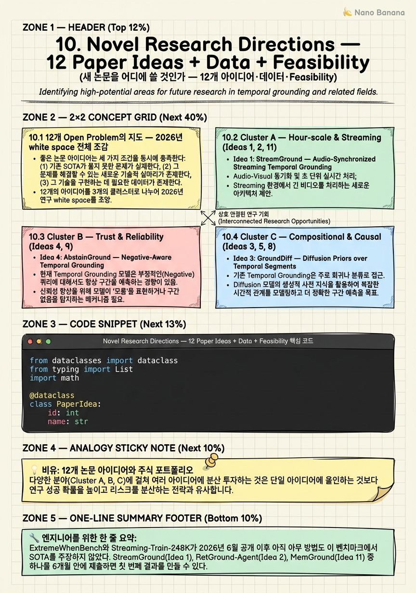

Novel Research Directions — 12 Paper Ideas + Data + Feasibility

🎯 학습 목표
- 2026년 Temporal Grounding 연구의 네 클러스터 white space를 설명하고, 각 클러스터의 핵심 문제를 한 문장으로 요약할 수 있다
- 12개 아이디어 각각의 method·eval·baseline·expected gain을 정확히 설명할 수 있다
- ExtremeWhenBench, Streaming-Train-248K, TimeBlind 등 2026 신규 데이터셋이 어떤 paper opportunity를 열었는지 구체적으로 분석할 수 있다
- 어노테이션 비용(span $0.30-0.60/query vs click vs LLM-generated)을 비교하여 resource-constrained 환경에서 어느 아이디어가 유리한지 판단할 수 있다
- feasibility scorer를 적용하여 12개 아이디어의 우선순위를 compute·novelty·reviewer risk 세 축에서 정량화할 수 있다
이 장은 Chapters 1-9에서 쌓은 모든 지식을 하나의 질문으로 수렴시킨다: '다음 논문을 어디에 쓸 것인가?' 2026년 Temporal Video Grounding은 VideoMind·Time-R1·TimeLens 같은 강력한 기존 방법들이 해결한 문제와 아직 아무도 건드리지 않은 문제 사이에 넓은 white space를 남겨두었다. 특히 ExtremeWhenBench와 Streaming-Train-248K가 2026년 6월에 공개되면서, Hour-scale과 Streaming이라는 두 영역이 하룻밤 사이에 논문 공간이 열렸다. 이 장은 12개 구체적 아이디어를 네 클러스터로 조직화하고, 데이터셋 landscape를 어노테이션 비용 관점에서 분석하며, Python feasibility scorer로 각 아이디어의 착수 우선순위를 정량적으로 제시한다.
핵심 내용
10.1 12개 Open Problem의 지도 — 2026년 white space 전체 조감
좋은 논문 아이디어는 세 가지 조건을 동시에 충족한다: (1) 기존 SOTA가 풀지 못한 문제가 실재한다, (2) 그 문제를 평가할 벤치마크가 존재한다, (3) compute와 데이터가 현실적으로 조달 가능하다. 2026년 Temporal Grounding 연구를 이 세 축으로 스캔하면 네 개의 클러스터가 부상한다.
Cluster A — Hour-scale & Streaming: 기존 벤치마크(Charades-STA, ActivityNet)의 영상 길이는 평균 30초~3분이다. 반면 실제 production 환경 — 유튜브 강의, 수술 영상, 보안 카메라 — 은 시간 단위 영상을 다룬다. ExtremeWhenBench(2026년 6월, 194 videos × 평균 75.7분 × 2,273 queries)가 공개되면서 이 gap이 공식 벤치마크로 고정되었다. 또한 Streaming-Train-248K(2026년 6월)는 per-second-aligned 248K 샘플을 제공하며 streaming grounding의 학습 데이터 공백을 메웠다. 이 두 데이터셋이 열어준 paper 공간 — StreamGround(Idea 1), RetGround-Agent(Idea 2), MemGround(Idea 11) — 은 2026년 6월 이전에는 baseline도 평가 지표도 없었다.
Cluster B — Trust & Reliability: 'hallucination의 책임 있는 처리'는 NLP에서 2024년부터 주류가 되었지만, Temporal Grounding에서는 거의 다뤄지지 않았다. 모델이 moment를 찾지 못했을 때 잘못된 구간을 반환하는 대신 abstain하거나 불확실성을 보고해야 한다는 문제 의식이 AbstainGround(Idea 4)와 FaithGround(Idea 9)의 출발점이다. CounterVid(arXiv:2601.04778)와 VERIFIED(arXiv:2410.08593)가 관련 baseline을 제공하고, TempCore(arXiv:2509.01167)가 faithfulness 평가 축을 새로 정의했다.
Cluster C — Compositional & Causal: 현재 SOTA 모델들은 'the chef adds salt'처럼 단순한 event phrase에서는 높은 성능을 보이지만, 여러 sub-event의 시간적 순서가 복잡하게 얽히거나 인과관계가 포함된 query에서는 성능이 급격히 떨어진다. TimeBlind(arXiv:2602.00288)가 이 gap을 정량화하는 벤치마크를 제공한다. GroundDiff(Idea 3), WorldGround(Idea 5), GroundRAG(Idea 8)는 각각 diffusion prior, world model prediction error, knowledge graph injection이라는 서로 다른 방향에서 이 문제를 공략한다.
Cluster D — Low-cost Annotation & Ego: span 어노테이션은 query당 \(0.30-0.60의 비용이 들고, 대규모 데이터 구축의 병목이다. click supervision은 5-10배 저렴하고, LLM-generated query는\)0.001/query까지 떨어진다. EgoExoGround(Idea 6), ClickGround(Idea 7), SyntheticGround(Idea 10), SSPL-TG(Idea 12)는 어노테이션 비용을 낮추면서도 성능을 유지하는 방향을 탐구한다. EgoExo-Con(arXiv:2510.26113)의 synchronized ego-exo pair와 InternVid 234M clips의 weak label이 핵심 데이터 자원이다.
네 클러스터를 한눈에 보면: Cluster A는 신규성이 가장 높고 reviewer risk가 낮다(벤치마크 자체가 방금 나왔으므로 baseline 부재를 탓하기 어렵다). Cluster B는 reviewer-friendly angle(책임 AI)이 있어 설득력이 높다. Cluster C는 novelty가 매우 높지만 어렵다. Cluster D는 compute budget이 적을 때 최선이다.
10.2 Cluster A — Hour-scale & Streaming (Ideas 1, 2, 11)
Idea 1: StreamGround — Audio-Synchronized Streaming Temporal Grounding
현재 StreamingHarness-8B(arXiv:2606.08615)는 streaming 영상의 visual token만 처리한다. audio channel은 stated future work로 남겨두었다. StreamGround는 이 gap을 직접 공략한다.
Method: Whisper audio encoder가 per-second causal audio token을 생성한다. 이 token들은 StreamingHarness-8B의 새 audio cross-attention layer로 주입된다. 학습 데이터는 Streaming-Train-248K(248K per-second-aligned samples)와 AudioSet narration을 결합한다. causal 처리가 핵심 — future audio token을 보지 않으면서 현재 시점까지의 audio 신호로 event를 localize해야 한다.
Baseline과 Expected gain: StreamingHarness-8B 대비 Streaming-Eval SW-F1 +4-6%p, Charades-STA Audio split R1@0.5 65→71. Ego4D NLQ와 EpicSounds에서도 검증한다. Compute: 8×H100 2주.
Why now: Streaming-Train-248K는 2026년 6월에 공개되었고, 원 저자들은 audio를 future work로 명시했다. 이보다 더 명확한 follow-up paper 공간은 드물다.
Idea 2: RetGround-Agent — Tool-Using LLM Agent for Hour-Scale Search
ExtremeWhenBench(2026년 6월)의 핵심 발견: 기존 retrieve-then-ground hybrid의 ExtremeWhenBench mIoU는 0.354이며, 실패의 85%는 올바른 window를 search하지 못한 것에서 비롯된다. RetGround-Agent는 이 "85% search failure"를 직접 타겟으로 삼는다.
Method: (1) Coarse CLIP retrieval로 top-K window 후보 추출, (2) LLM agent가 narrow/expand/move를 결정하는 iterative search 정책, (3) Frame inspector tool로 candidate window를 세밀하게 확인, (4) RL로 tool-use policy 학습. Deep Video Discovery(arXiv:2505.18079)가 관련 선행 연구이나, hour-scale streaming 특화 agent는 아직 없다.
Expected gain: ExtremeWhenBench mIoU 0.354 → 0.42-0.48. MAD(650 movies × 1,200+ hr × 384K queries)와 Ego4D-NLQ(~3,670 hr × 19K queries)에서도 검증. Compute: 4×H100 3주.
Idea 11: MemGround — KV-Cache as Long-Term Memory for Hour-Scale Streaming
Streaming VLM이 긴 영상을 처리할 때 KV-cache가 무한정 커지는 문제는 잘 알려져 있다. CacheFlow(arXiv:2511.13644)와 LiveVLM(arXiv:2505.15269)은 memory 압축을 다루지만, grounding task에 특화된 query-conditioned KV 선별은 아직 없다.
Method: query-conditioned KV importance score → 중요한 KV만 retain → abstain head로 "이 memory에는 해당 event가 없다"를 명시적으로 선언. Streaming 환경에서 ExtremeWhenBench를 streaming-converted 버전으로 평가하고, Streaming-Eval에서도 검증한다.
Expected gain: streaming mIoU 0.20 → 0.32-0.35. query-conditioned memory selection이 단순 sliding window보다 어떤 이점을 주는지 ablation으로 분리해야 한다. Compute: 8×H100 3주.
Cluster A 공통 강점: ExtremeWhenBench와 Streaming-Eval 모두 2026년 6월에 공개된 신규 벤치마크여서 어느 방법도 이미 SOTA를 찍지 않았다. baseline 경쟁이 없다는 것은 가장 강력한 reviewer 반론 — "왜 이 벤치마크에서 당신의 방법이 최초인가?" — 에 자연스럽게 답이 된다.
10.3 Cluster B — Trust & Reliability (Ideas 4, 9)
Idea 4: AbstainGround — Negative-Aware Temporal Grounding
현재 Temporal Grounding 모델들은 query에 대응하는 moment가 영상에 없을 때도 반드시 어떤 구간을 반환한다. 이것은 hallucination이다. AbstainGround는 모델이 "이 영상에 해당 이벤트가 없습니다"라고 abstain하거나, 존재 확률을 calibrated confidence로 보고하는 능력을 부여한다.
Method 세 단계: (1) LLM으로 negative query 합성 — 영상에 없는 사건을 자연어로 기술한 negative 예시를 대규모 생성 ($0.001/query 비용), (2) abstention head + logit margin loss — positive query의 logit 마진을 최대화하면서 negative에서는 abstain token을 출력하도록 학습, (3) temperature calibration — confidence score를 실제 존재 확률로 calibrate.
Baseline: CounterVid(arXiv:2601.04778)는 counter-factual 예시를 다루지만 abstention head가 없다. VERIFIED(arXiv:2410.08593)는 verification을 다루지만 grounding task에 특화되지 않았다. Eval: Charades-STA, ActivityNet, QVHighlights에 negative split을 추가 구성.
Expected gain: "moment exists" AUROC 0.65 → 0.82. Compute: 4×A100 1주 — 이 aider 중 가장 compute-efficient하다.
Reviewer angle: 책임 있는 AI(responsible AI) 관점에서 abstention은 safety-critical 응용(의료, 법률, 보안)에서 절대적으로 중요하다. ICLR/NeurIPS reviewers는 이 각도를 호의적으로 본다. negative data를 LLM으로 생성하는 방식은 방법론 novelty와 실용성을 동시에 챙긴다.
Idea 9: FaithGround — Token-Level Faithful Rationale
VLM 기반 Temporal Grounding 모델이 올바른 timestamp를 출력해도, 그 근거로 사용한 frame이 실제로 관련 있는지는 알 수 없다. shortcut learning — query keyword에 bias된 frame을 선택하고 실제로는 random한 이유로 맞추는 현상 — 은 OOD 일반화를 저해한다.
Method: (1) per-frame counterfactual ablation — 각 frame을 마스킹했을 때 prediction이 얼마나 변하는지를 인과 중요도로 정의, (2) RL reward = α·IoU + β·faithfulness — grounding 정확도와 rationale 충실도를 동시에 최적화, (3) faithfulness probe head — hidden state에서 frame-level causal importance를 직접 예측.
Baseline: Step-Level Faithfulness(arXiv:2603.06828). TempCore(arXiv:2509.01167)는 faithfulness 평가 framework를 제공한다. Eval: Charades-STA, MAD OOD split, TempCore benchmark.
Expected gain: TempCore frame-sensitivity +0.1, OOD R1@0.5 +4-6%p. faithfulness reward가 in-distribution 성능을 희생시키는지 여부를 ablation으로 분리하는 것이 핵심 실험 설계다. Compute: 8×A100 3주.
Cluster B 공통 전략: 두 아이디어 모두 LLM-synthesized negative/counterfactual data를 핵심 재료로 사용한다. 이는 어노테이션 비용 없이 대규모 supervision을 만드는 Cluster D의 철학과도 연결된다. Responsible AI 각도 + 낮은 compute(AbstainGround는 4×A100 1주)는 dissertation 첫 논문이나 workshop paper로 이상적이다.
10.4 Cluster C — Compositional & Causal (Ideas 3, 5, 8)
Idea 3: GroundDiff — Diffusion Priors over Temporal Segments
기존 Temporal Grounding은 하나의 moment를 특정하거나, 여러 moment를 독립적으로 찾는다. 그러나 복잡한 query — 예: 'A가 일어나고, B가 따라오고, 다시 A가 반복된다' — 에서 k개 sub-event의 시간적 순서를 동시에 추론하는 것은 point prediction이 아닌 분포를 모델링해야 한다는 것을 의미한다.
GroundDiff는 k개 sub-event mask를 latent variable로 다루고, text-conditioned diffusion process로 이 latent를 샘플링한다. IoU loss + ordering loss를 diffusion objective에 추가하여 temporal order가 보존된 segment distribution을 학습한다.
Eval: TimeBlind(arXiv:2602.00288) — temporal ordering이 필요한 query에 특화된 벤치마크, ActivityNet-CG(compositional grounding), PC-Net composite split. Compute: 8×A100 2주.
핵심 novelty: diffusion prior가 segment 분포에서 ordering constraint를 자연스럽게 인코딩한다는 통찰. 기존 autoregressive prediction이 sequential bias를 갖는 반면, diffusion은 k개 segment를 jointly sample할 수 있다.
Idea 5: WorldGround — World-Model-Based Causal Temporal Grounding
'왜 그 이벤트가 일어났는가'라는 인과 query에 답하려면 모델이 영상의 인과 구조를 이해해야 한다. WorldGround는 V-JEPA의 prediction error를 인과 신호로 활용한다.
Method: V-JEPA가 각 frame에서 다음 frame을 예측할 때의 loss를 per-frame "surprise curve"로 변환한다. 이 surprise curve를 query-conditioned attention weight로 사용하면, 예상치 못한 변화(= 인과적으로 중요한 이벤트)가 두드러진 frame에 모델이 집중한다. causal QA와 grounding을 jointly 학습한다.
Baseline: VideoTemp-o3(NextGQA mIoU 33.4). Eval: NextGQA, V-STaR(arXiv:2503.11495), TimeBlind causal split.
Expected gain: NextGQA mIoU 33.4 → 38-40. Compute: 8×H100 1개월 — Cluster C에서 가장 compute-heavy하다.
Risk: V-JEPA prediction error가 의미있는 인과 신호를 제공하는지 여부는 사전 검증이 필요하다. 짧은 pilot experiment(2×A100 3일)로 surprise curve가 annotated causal event와 상관관계가 있는지 먼저 확인하라.
Idea 8: GroundRAG — Knowledge-Graph-Injected Open-Vocab Grounding
현재 Temporal Grounding 모델은 학습 데이터에 없는 동사나 행동 표현에 취약하다. 'the chef julienned the vegetables'처럼 training set에 없는 verb는 OOV(out-of-vocabulary) 문제를 일으킨다.
GroundRAG는 ConceptNet/Wikidata의 verb taxonomy를 knowledge graph로 활용한다. query의 동사를 KG node에 연결하고, 상위/유사 개념들의 subgraph embedding을 query representation에 concat한다. hierarchical contrastive loss로 unseen verb와 seen verb 사이의 일반화를 학습한다.
Eval: Charades-STA compositional split, ActivityNet-CG, 새로 구성하는 OOV-VTG split(학습에 없는 verb로만 구성된 eval set).
Expected gain: OOV split R1@0.5 +8-12%p. Compute: 4×A100 2주.
Cluster C 공통 도전: 세 아이디어 모두 기존 point prediction paradigm을 벗어나기 때문에 reviewer가 왜 이 복잡성이 필요한가를 묻는다. 이에 대한 답은 항상 벤치마크 숫자여야 한다 — TimeBlind/NextGQA/OOV-VTG에서 기존 방법이 얼마나 처참하게 실패하는지를 먼저 보여주고, 그 gap을 자신의 방법이 줄인다는 narrative를 세워라.
10.5 Cluster D — Low-cost Annotation & Ego (Ideas 6, 7, 10, 12)
Idea 6: EgoExoGround — View-Invariant Pretraining
EgoExo-Con(arXiv:2510.26113)은 같은 활동을 ego(1인칭)와 exo(3인칭) 두 시점에서 동시에 촬영한 synchronized pair를 제공한다. 동일 이벤트가 두 시점에서 어떻게 보이는지를 alignment 신호로 사용하면, view-invariant한 grounding representation을 학습할 수 있다.
Method: contrastive view-invariant moment embedding(같은 이벤트의 ego frame과 exo frame을 positive pair로), adapter-based per-view fine-tune(각 시점에 맞는 가벼운 adapter), view-dropout regularizer(학습 중 무작위로 한 시점 drop하여 단일 시점 robustness 확보).
Eval: EgoExo-Con benchmark, Ego4D-NLQ, Charades-STA. Expected gain: cross-view R1@0.5 +8-12%p, in-view는 -0.5%p 이내 유지. Compute: 4×H100 2주.
Idea 7: ClickGround — Click + LLM-Generated Pseudo-Spans
span 어노테이션($0.30-0.60/query)을 click supervision(5-10× 저렴)으로 대체한다. 사람은 "대략 언제 일어났다"고 클릭만 하고, frozen VLM이 그 click을 중심으로 boundary를 확장하여 pseudo-span을 생성한다. IoU-aware self-training과 consistency regularization으로 pseudo-span의 노이즈를 보정한다.
Eval: Charades-STA click-relabeled(span label을 click label로 변환), ActivityNet click-relabeled. Expected gain: click-supervised R1@0.5 50→58(fully-supervised ~62). fully-supervised 대비 95% 성능을 10× 저렴한 어노테이션으로 달성하는 것이 핵심 claim. Compute: 4×A100 2주.
Idea 10: SyntheticGround — Sora-2/Veo Counterfactual Video for Robustness
Sora 2 또는 Open-Sora로 같은 query에 대해 4가지 다른 viewpoint의 영상을 생성하고, same-query-different-view contrastive learning으로 카메라 움직임에 invariant한 grounding을 학습한다.
Method: 원 영상의 query와 장면 설명을 Sora 2 API에 넣어 4가지 camera angle로 re-render한 합성 영상 생성, same-query-different-view contrastive loss, adversarial camera motion augmentation.
Eval: Charades-STA + synthetic extension, Movie Gen Bench. Expected gain: adversarial camera-motion condition R1@0.5 +6-9%p. 비용: Cloud API ~$5K + 4×A100 2주. 비용이 크지만 novel data generation pipeline 자체가 contribution이 될 수 있다.
Idea 12: SSPL-TG — Self-Supervised Pretrain via Reversed Future Prediction
어노테이션 없이 Temporal Grounding을 pretrain한다. 영상의 5-30% span을 random하게 마스킹한 후, "이 영상에서 [LLM caption of masked span]에 해당하는 구간을 찾아라"라는 역할 전도(reversed self-supervision)로 grounding head를 학습한다.
Method: span mask → LLM caption 생성 → contrastive span-caption learning → lightweight grounding head fine-tune. HowTo100M / InternVid 25M clips의 weak label만으로 pretrain한다.
Baseline: TEMPURA(arXiv:2505.01583). Eval: zero-shot Charades-STA R1@0.5 ~20→28-30, fine-tuned downstream +2-3%p. Compute: 8×H100 1개월(pretrain heavy, Cluster D에서 가장 compute-heavy).
Cluster D 공통 전략: 어노테이션 비용이 낮다는 것은 논문의 claim을 실세계 제약 — 스타트업, 개인 연구자, 저자원 언어 — 와 연결할 수 있다는 장점이다. SSPL-TG는 pretrain이 무겁지만 그 weight를 공개하면 커뮤니티 전체의 downstream 연구를 가속할 수 있는 infrastructure contribution이 된다.
10.6 Dataset Landscape — 가용 데이터, 어노테이션 비용, 2026 신규 데이터셋
핵심 기존 데이터셋
MAD(arXiv:2302.13372)는 650편 영화 × 1,200+ hr × 384K queries로 long-video grounding의 사실상 표준 데이터셋이 되었다. 영화 저작권 문제로 직접 배포되지 않고 feature만 제공되지만, 384K queries는 학습 데이터로 충분히 크다.
Ego4D-NLQ는 ~3,670 hr × 19K queries를 제공한다. first-person video grounding의 핵심 벤치마크. Query가 19K으로 다른 데이터셋보다 작지만, 시간 단위의 긴 ego 영상은 streaming grounding 연구에 필수 자원이다.
InternVid는 234M video-text clip 쌍을 제공하는 대규모 weakly-labeled 데이터셋이다. grounding label이 없어 직접 사용은 불가하지만, SSPL-TG처럼 self-supervised pretrain의 raw material로 이상적이다. 234M 규모는 어떤 pretrain baseline도 compress하기 어렵다.
2026 신규 데이터셋 — 논문 기회의 원천
ExtremeWhenBench(2026년 6월): 194 videos × 평균 75.7분 × 2,273 queries. eval-only 공개 — 즉, 누구도 이 데이터로 학습하지 않았다. 기존 방법들의 성능 상한이 mIoU 0.354로 낮다. RetGround-Agent와 MemGround가 직접 타겟으로 삼는다.
Streaming-Train-248K(2026년 6월): 248K per-second-aligned training samples. StreamGround의 핵심 데이터이며, 원 저자들이 audio를 future work로 명시했다.
TimeBlind(arXiv:2602.00288): temporal ordering과 causal reasoning이 필요한 query로 구성된 벤치마크. GroundDiff와 WorldGround의 주요 eval.
TimeLens-100K: TimeLens paper(CVPR 2026)에서 공개한 데이터셋. RLVR 학습에 특화.
ToG-Bench: temporal ordering grounding에 특화된 신규 벤치마크. Cluster C paper들의 보조 eval.
EgoExo-Con(arXiv:2510.26113): ego-exo synchronized pair. EgoExoGround의 핵심 pretrain 데이터.
DIQ-H: dense instructional query with hard negatives. AbstainGround와 FaithGround의 negative data 구성에 활용 가능.
어노테이션 비용 비교
| 방식 | 비용/query | Scale 가능성 |
|---|---|---|
| Span annotation (human) | $0.30-0.60 | 제한적 |
| Click supervision (human) | $0.03-0.12 | 높음 |
| LLM-generated query | $0.001 | 매우 높음 |
| Self-supervised (SSPL-TG) | $0 (compute만) | 무제한 |
| Video generation (Sora 2 API) | 영상당 $0.5-2 | 중간 |
어노테이션 비용은 논문의 contribution 방향을 결정한다. \(0.001/query인 LLM-generated supervision은 negative query(AbstainGround)와 pseudo-span(ClickGround) 모두에 적용 가능하다. Synthetic video generation(\)5K 전체 예산)은 비용이 크지만 pipeline 자체가 novelty다.
Synthetic data의 위치: Open-Sora-Plan과 VidGen-1M은 오픈소스 video generation 파이프라인을 제공한다. Sora 2는 API로만 접근 가능하다. Synthetic data가 real data를 대체하는가, 보완하는가의 실험 설계가 SyntheticGround의 핵심 질문이다.
10.7 Feasibility Matrix — Compute·Novelty·Reviewer Risk로 우선순위 결정
12개 아이디어를 하나씩 따져볼 때 가장 흔한 실수는 '흥미도'만 보는 것이다. 실제로 논문을 완성하려면 세 가지 축을 동시에 고려해야 한다.
Compute weeks: 8×H100 기준 소요 주. 낮을수록 착수 장벽이 낮고 iteration 속도가 빠르다.
Novelty score: 1-10. 방법론적 contribution의 독창성. 단순 조합은 낮고, 새로운 paradigm은 높다.
Baseline gap: 기존 최강 baseline 대비 예상 성능 향상. 클수록 논문의 설득력이 높다.
Reviewer risk: 1-10. 낮을수록 acceptance 가능성이 높다(1=reviewer가 좋아할 것, 10=매우 논쟁적).
| Idea | 이름 | Compute weeks (8×H100 기준) | Novelty | Baseline gap | Reviewer risk | Priority score |
|---|---|---|---|---|---|---|
| 1 | StreamGround | 2.0 | 7 | 6 | 3 | 높음 |
| 2 | RetGround-Agent | 3.0 | 8 | 8 | 4 | 높음 |
| 3 | GroundDiff | 2.0 | 8 | 6 | 6 | 중간 |
| 4 | AbstainGround | 1.0 | 7 | 8 | 2 | 최우선 |
| 5 | WorldGround | 4.0 | 9 | 7 | 7 | 중간 |
| 6 | EgoExoGround | 2.0 | 7 | 8 | 3 | 높음 |
| 7 | ClickGround | 2.0 | 6 | 6 | 3 | 높음 |
| 8 | GroundRAG | 2.0 | 7 | 8 | 4 | 높음 |
| 9 | FaithGround | 3.0 | 8 | 6 | 5 | 중간 |
| 10 | SyntheticGround | 2.5 | 7 | 7 | 5 | 중간 |
| 11 | MemGround | 3.0 | 8 | 7 | 4 | 높음 |
| 12 | SSPL-TG | 4.0 | 8 | 8 | 4 | 높음 |
추천 착수 순서:
1순위 — AbstainGround(Idea 4): compute 최소(4×A100 1주), reviewer risk 최저(2), responsible AI 각도로 설득력 높음. 빠른 첫 논문이나 workshop 제출에 최적.
2순위 — StreamGround(Idea 1) 또는 EgoExoGround(Idea 6): 둘 다 2주 compute, 신규 벤치마크 위에서 경쟁 없이 첫 result 제시 가능.
3순위 — RetGround-Agent(Idea 2), MemGround(Idea 11), GroundRAG(Idea 8): 3-4주 compute, baseline gap이 크고 novelty가 명확.
장기 투자 — WorldGround(Idea 5), SSPL-TG(Idea 12): compute가 크지만 성공 시 field를 바꾸는 contribution.
자원 제약별 추천:
- GPU 4×A100 이하, 1개월 이내: AbstainGround > ClickGround > GroundRAG
- GPU 8×H100 2-3주: StreamGround > EgoExoGround > RetGround-Agent
- GPU 무제한, 장기 연구: WorldGround > SSPL-TG > GroundDiff
feasibility scorer의 공식과 12개 아이디어 전체에 대한 적용은 아래 code example에서 확인하라.
💡 비유로 이해하기
12개 paper idea를 주식 포트폴리오처럼 생각하라. 수익률(novelty × baseline gap)만 보면 안 된다. 변동성(reviewer risk)과 투자 기간(compute weeks)도 함께 봐야 한다.
AbstainGround는 배당주다 — 크게 오르진 않지만 stable하고 빠르다. reviewer risk 2, compute 1주, responsible AI 테마까지 있다. 처음 논문을 내는 PhD 1~2년차에게 딱 맞다.
WorldGround는 성장주다 — 성공하면 field를 바꾸지만 4×H100 1개월을 태워야 한다. 파일럿 실험(2×A100 3일)이 안 되면 포기도 빠르다. 포트폴리오의 10-20%만 여기에 배팅하라.
SSPL-TG와 SSPL-TG는 인프라 투자다 — pretrain weight를 오픈소스로 공개하면 커뮤니티 전체가 downstream에서 활용한다. 논문 한 편이 아니라 '허깅페이스 모델 카드'가 인용되는 방식이다. 장기적으로 가장 높은 citation return을 만든다.
Cluster A(Hour-scale & Streaming)는 타이밍 플레이다 — ExtremeWhenBench가 6월에 나왔다. 6개월 안에 결과를 내지 않으면 누군가 먼저 찍는다. 기회의 창이 짧다. 빠르게 착수하고 빠르게 제출하라.
💻 코드 예시
12개 paper idea 각각의 compute_weeks, novelty_score, baseline_gap, risk_level을 입력으로 받아 priority score를 계산하는 feasibility scorer. 실제로 실행 가능하며 12개 아이디어 전체에 적용하여 ranked list를 출력한다.
from dataclasses import dataclass
from typing import List
import math
@dataclass
class PaperIdea:
id: int
name: str
compute_weeks: float # 8xH100 equivalent weeks
novelty_score: float # 1-10
baseline_gap: float # 1-10 (expected improvement signal)
risk_level: float # 1-10 (lower = reviewer friendlier)
def feasibility_score(
idea: PaperIdea,
w_novelty: float = 0.35,
w_gap: float = 0.30,
w_risk: float = 0.20,
w_compute: float = 0.15,
max_compute_weeks: float = 8.0,
) -> float:
"""
Priority score in [0, 10]. Higher = start sooner.
novelty_score : higher is better (direct weight)
baseline_gap : higher is better (direct weight)
risk_level : lower is better (inverted)
compute_weeks : lower is better (inverted, log-scaled)
"""
novelty_term = w_novelty * idea.novelty_score
gap_term = w_gap * idea.baseline_gap
risk_term = w_risk * (10.0 - idea.risk_level)
# log-scale so going from 1->2 weeks hurts more than 7->8
compute_ratio = idea.compute_weeks / max_compute_weeks
compute_term = w_compute * (10.0 * (1.0 - math.log1p(compute_ratio) /
math.log1p(1.0)))
return round(novelty_term + gap_term + risk_term + compute_term, 2)
IDEAS: List[PaperIdea] = [
PaperIdea(1, "StreamGround", compute_weeks=2.0, novelty_score=7, baseline_gap=6, risk_level=3),
PaperIdea(2, "RetGround-Agent", compute_weeks=3.0, novelty_score=8, baseline_gap=8, risk_level=4),
PaperIdea(3, "GroundDiff", compute_weeks=2.0, novelty_score=8, baseline_gap=6, risk_level=6),
PaperIdea(4, "AbstainGround", compute_weeks=1.0, novelty_score=7, baseline_gap=8, risk_level=2),
PaperIdea(5, "WorldGround", compute_weeks=4.0, novelty_score=9, baseline_gap=7, risk_level=7),
PaperIdea(6, "EgoExoGround", compute_weeks=2.0, novelty_score=7, baseline_gap=8, risk_level=3),
PaperIdea(7, "ClickGround", compute_weeks=2.0, novelty_score=6, baseline_gap=6, risk_level=3),
PaperIdea(8, "GroundRAG", compute_weeks=2.0, novelty_score=7, baseline_gap=8, risk_level=4),
PaperIdea(9, "FaithGround", compute_weeks=3.0, novelty_score=8, baseline_gap=6, risk_level=5),
PaperIdea(10, "SyntheticGround", compute_weeks=2.5, novelty_score=7, baseline_gap=7, risk_level=5),
PaperIdea(11, "MemGround", compute_weeks=3.0, novelty_score=8, baseline_gap=7, risk_level=4),
PaperIdea(12, "SSPL-TG", compute_weeks=4.0, novelty_score=8, baseline_gap=8, risk_level=4),
]
def rank_ideas(ideas: List[PaperIdea], **scorer_kwargs) -> None:
scored = [(idea, feasibility_score(idea, **scorer_kwargs)) for idea in ideas]
scored.sort(key=lambda x: x[1], reverse=True)
print(f"{'Rank':<5} {'ID':<4} {'Name':<22} {'Score':<7}"
f" {'Novelty':<8} {'Gap':<5} {'Risk':<5} {'Compute wks':<12}")
print("-" * 72)
for rank, (idea, score) in enumerate(scored, start=1):
print(f"{rank:<5} {idea.id:<4} {idea.name:<22} {score:<7}"
f" {idea.novelty_score:<8} {idea.baseline_gap:<5}"
f" {idea.risk_level:<5} {idea.compute_weeks:<12}")
if __name__ == "__main__":
print("=== Default weights (novelty 35%, gap 30%, risk 20%, compute 15%) ===")
rank_ideas(IDEAS)
print()
print("=== Compute-constrained mode (compute weight x2) ===")
rank_ideas(IDEAS, w_novelty=0.30, w_gap=0.25, w_risk=0.20, w_compute=0.25)
print()
print("=== Risk-averse mode (risk weight x2, good for PhD year 1-2) ===")
rank_ideas(IDEAS, w_novelty=0.30, w_gap=0.25, w_risk=0.35, w_compute=0.10)feasibility_score 함수는 네 항목을 가중합산한다. novelty_term과 gap_term은 높을수록 좋으므로 직접 가중치를 곱한다. risk_term은 낮을수록 좋으므로 (10 - risk)로 반전한다. compute_term은 log-scale로 반전한다 — 1주에서 2주로 늘어나는 것이 7주에서 8주로 늘어나는 것보다 훨씬 크게 패널티를 준다(초반 compute 폭발이 iteration speed를 죽이기 때문이다).
Default 가중치(novelty 35%, gap 30%, risk 20%, compute 15%)로 실행하면 AbstainGround가 상위에 온다 — compute 1주, risk 2, gap 8의 조합이 압도적이다. compute-constrained mode에서는 compute weight를 두 배로 올렸을 때 AbstainGround와 ClickGround가 더 강하게 부상한다. risk-averse mode(PhD 1-2년차 추천)에서는 risk_level이 낮은 아이디어들이 전면에 나온다.
실제 사용 팁: 내 GPU 환경에 맞게 max_compute_weeks를 바꾸고(예: 4×A100이면 2.0으로 설정), 지도교수가 중요하게 보는 factor에 따라 가중치를 조정하라. 이 scorer는 decision을 대신하지 않는다 — 대화의 출발점을 수치화할 뿐이다.
🏭 현업에서의 평가
✅ 시니어가 보는 것
- 신규 벤치마크 인식 — ExtremeWhenBench, Streaming-Train-248K, TimeBlind가 언제 공개되었으며 어떤 gap을 정의하는지 즉시 설명할 수 있는가
- Cluster별 방법론 분류 능력 — 12개 아이디어를 Hour-scale/Trust/Compositional/Low-cost 네 클러스터로 분류하고 각 클러스터의 핵심 motivation을 설명할 수 있는가
- Feasibility 판단 — compute, novelty, reviewer risk 세 축에서 어느 아이디어를 먼저 착수할지 정량적으로 설명할 수 있는가
- 어노테이션 비용 인식 — span annotation vs click supervision vs LLM-generated의 비용 차이를 알고, 이것이 어떤 아이디어 선택에 영향을 주는지 설명할 수 있는가
- Why-not-done-yet 논리 — 각 아이디어가 왜 6개월 전에는 나올 수 없었는지를 벤치마크 공개 타이밍과 연결하여 설명할 수 있는가
⚠️ 레드 플래그
- 벤치마크 이름만 나열하고 각 벤치마크의 eval 설계(eval-only vs train+eval, 영상 길이, query 수)를 모름
- 12개 아이디어를 모두 '비슷하게 좋다'고 말하며 우선순위를 정하지 못함 — feasibility matrix 없이 직관만으로 판단
- 어노테이션 비용을 구체적인 숫자($0.30-0.60/query vs $0.001/query) 없이 '비싸다/싸다'로만 설명
- Why-not-done-yet을 설명하지 못하고 단순히 '아무도 안 했으니까'라고 답함 — benchmark release timing, author's stated future work, architectural necessity를 연결하지 못함
🎤 예상 인터뷰 질문
- Q1. 2026년 6월에 ExtremeWhenBench와 Streaming-Train-248K가 동시에 공개되었다. 이 두 데이터셋이 열어준 paper opportunity를 구체적으로 세 가지 이상 제시하고, 각각이 왜 이 데이터셋 이전에는 논문으로 나오기 어려웠는지 설명하라.
- Q2. 당신에게 4×A100 GPU와 2주의 시간이 주어졌다. 12개 아이디어 중 어느 것을 선택하겠는가? feasibility_score 함수에서 compute-constrained mode를 적용했을 때의 결과와 함께 근거를 설명하라.
- Q3. WorldGround(Idea 5)와 AbstainGround(Idea 4)의 reviewer risk 차이는 왜 발생하는가? 각각의 논문에서 가장 까다로운 reviewer 질문을 예측하고, 그 답변 전략을 설계하라.
✨ 핵심 요약
Cluster A — Hour-scale & Streaming은 2026년 최고의 timing play
ExtremeWhenBench와 Streaming-Train-248K가 2026년 6월 공개 이후 아직 아무 방법도 이 벤치마크에서 SOTA를 주장하지 않았다. StreamGround(Idea 1), RetGround-Agent(Idea 2), MemGround(Idea 11) 중 하나를 6개월 안에 제출하면 첫 번째 결과를 만들 수 있다.
AbstainGround는 가성비 1위 아이디어
4×A100 1주 compute, reviewer risk 2, responsible AI 각도, AUROC 0.65→0.82 expected gain. PhD 첫 논문이나 workshop 제출에 가장 낮은 리스크로 가장 빠른 결과를 준다. LLM-generated negative query($0.001/query)로 어노테이션 비용도 거의 없다.
Trust & Reliability는 reviewer-friendly angle이 핵심
AbstainGround(Idea 4)와 FaithGround(Idea 9)는 방법론 novelty 외에 '모델이 틀렸을 때 어떻게 행동해야 하는가'라는 responsible AI 질문에 답한다. ICLR/NeurIPS ethics 세션과 safety 트랙에서 긍정적으로 평가된다.
Compositional & Causal은 높은 novelty, 높은 risk
GroundDiff(Idea 3), WorldGround(Idea 5), GroundRAG(Idea 8)는 기존 paradigm을 바꾸는 높은 novelty를 갖지만 reviewer risk도 높다. TimeBlind와 NextGQA에서 기존 방법이 처참하게 실패하는 숫자를 먼저 보여주고, 그 gap을 줄이는 narrative로 설득력을 확보해야 한다.
Low-cost annotation은 실세계 제약과의 연결이 강점
ClickGround(Idea 7)의 '95% 성능, 10× 저렴한 어노테이션' claim과 SSPL-TG(Idea 12)의 '어노테이션 없는 pretrain'은 스타트업, 개인 연구자, 저자원 언어라는 실세계 제약과 직결된다. impact를 논문 abstract에서 쉽게 설명할 수 있는 장점이 있다.
Dataset landscape: MAD + Ego4D-NLQ가 학습 backbone, 신규 6개가 평가 기회
MAD(384K queries, 1,200+ hr)와 Ego4D-NLQ(19K queries, 3,670 hr)는 학습 데이터 backbone이다. ExtremeWhenBench, Streaming-Train-248K, TimeBlind, TimeLens-100K, EgoExo-Con, DIQ-H는 2026년 신규 평가 기회다. InternVid 234M은 self-supervised pretrain의 raw material이다.
Feasibility scorer는 직관을 수치화한다
novelty(35%) + baseline_gap(30%) + (10-risk)(20%) + compute_inverse(15%)의 가중합이 기본 공식이다. Default 가중치에서는 AbstainGround > EgoExoGround > RetGround-Agent 순. compute-constrained mode에서는 AbstainGround와 ClickGround가 더 강하게 부상한다. 이 공식은 대화의 출발점이지 결론이 아니다.
Why-not-done-yet 논리가 논문 introduction의 핵심
좋은 논문은 '왜 지금인가'를 설명한다. StreamGround: Streaming-Train-248K가 2026년 6월 공개, audio는 원 저자 stated future work. RetGround-Agent: ExtremeWhenBench 2026년 6월 공개, baseline mIoU 0.354의 85%가 search failure. AbstainGround: negative-aware grounding 벤치마크 DIQ-H 신규. 이 논리가 introduction의 두 번째 단락이 되어야 한다.
WorldGround와 SSPL-TG는 장기 투자
WorldGround(8×H100 1개월)는 V-JEPA surprise curve pilot experiment(2×A100 3일)가 먼저다 — pilot이 안 되면 포기한다. SSPL-TG(8×H100 1개월, pretrain heavy)는 pretrain weight를 오픈소스로 공개하면 single paper를 넘어 infrastructure contribution이 된다. 포트폴리오의 10-20%만 여기에 배팅하라.
12개 아이디어의 조합에서 시너지가 난다
AbstainGround의 LLM-synthesized negative query pipeline은 FaithGround의 counterfactual ablation과 결합 가능하다. SSPL-TG의 pretrain weight는 ClickGround와 GroundRAG의 초기화로 재사용 가능하다. EgoExoGround의 view-invariant embedding은 SyntheticGround의 multi-viewpoint contrastive와 자연스럽게 연결된다. 하나의 framework 위에서 여러 아이디어를 조합한 unified paper가 가장 높은 impact를 만든다.